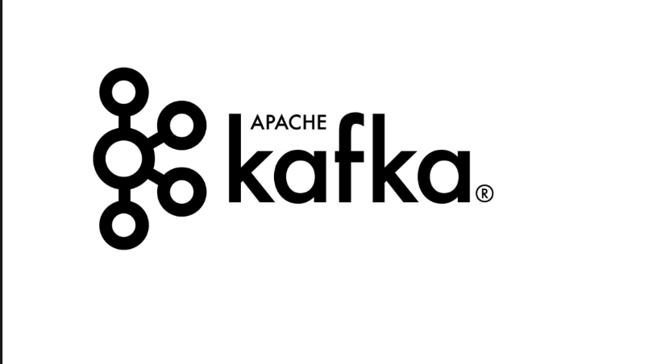

Introdução
1.1 O que é o Apache Kafka

O Apache Kafka é uma plataforma de streaming de eventos distribuída de código aberto, utilizada para coletar, processar e armazenar dados de eventos em tempo real . Ele é frequentemente descrito como um log de confirmação distribuído ou sistema de mensagens do tipo publicação/assinatura projetado para lidar com grandes volumes de dados (bilhões de eventos por minuto) de forma escalável e resiliente . Originalmente criado pelo LinkedIn em 2011 para resolver problemas de pipelines de dados internos, o Kafka tornou-se o padrão de mercado para fluxos de eventos, sendo utilizado hoje por mais de 80% das empresas Fortune 500.
Como Funciona?
O funcionamento do Kafka baseia-se em cinco funções e componentes principais:- Publicar: Fontes de dados (produtores) enviam fluxos de eventos para categorias chamadas tópicos
- Consumir: Aplicativos (consumidores) assinam esses tópicos para ler, extrair e processar os dados conforme necessário
- Processar: Através da API Kafka Streams, a plataforma pode atuar como um processador, consumindo dados de entrada e produzindo novos fluxos de saída transformados em tempo real
- Conectar: Utiliza o Kafka Connect para criar conexões reutilizáveis que integram tópicos do Kafka a aplicativos e bancos de dados existentes
Diferenciais e Arquitetura
Diferente de sistemas de filas tradicionais (como o RabbitMQ), que geralmente excluem mensagens após o consumo, o Kafka retém os dados, permitindo que múltiplos consumidores leiam a mesma informação de forma independente Sua infraestrutura é composta por um cluster de servidores (brokers) . Para garantir a escalabilidade e a tolerância a falhas, os tópicos são divididos em partições, que são distribuídas e replicadas entre os diferentes brokers do cluster . Isso garante que, se um servidor falhar, os dados permaneçam disponíveis em outros nós.Principais Casos de Uso
- Rastreamento de Atividade: Monitorar cliques e ações de usuários em sites para gerar relatórios ou alimentar sistemas de recomendação
- Métricas e Logging: logs de sistemas e métricas de aplicativos de forma centralizada
- Microsserviços: Facilitar a comunicação assíncrona e desacoplada entre diferentes serviços de uma aplicação
- Pipelines de Dados: Mover grandes volumes de dados de forma confiável entre sistemas empresariais e plataformas de Big Data ou Data Lakes
1.2 Origem
O Apache Kafka teve sua origem no LinkedIn para resolver problemas críticos de infraestrutura relacionados a pipelines de dados e processamento em tempo real . A empresa precisava de um sistema de alto desempenho que pudesse lidar com bilhões de eventos diários, algo que as ferramentas existentes na época não conseguiam suportar.Problema no LinkedIn
Originalmente, o LinkedIn possuía sistemas separados para coletar métricas e rastrear atividades de usuários (cliques, visualizações de perfil, etc.) . Essas soluções eram ineficientes, exigiam intervenção humana constante e tinham atrasos de horas no processamento . A empresa chegou a testar soluções como o ActiveMQ, mas elas se mostraram frágeis e incapazes de escalar para o volume de tráfego necessárioOs Criadores
Diante da necessidade de uma solução customizada, uma equipe interna liderada por Jay Kreps, Neha Narkhede e Jun Rao desenvolveu o Kafka . Eles buscaram criar um sistema que combinasse a interface de mensageria tradicional com uma camada de armazenamento persistente semelhante a um log de agregação .Sendo assim, os objetivos principais do projeto eram:
- Desacoplar: produtores e consumidores usando um modelo de "empurrar e puxar" (push-pull)
- Garantir: a persistência das mensagens para permitir que múltiplos consumidores as lessem de forma independente
- Otimizar: para alto rendimento (throughput) e permitir a escalabilidade horizontal à medida que os dados crescessem
Evolução para Código Aberto
- 2010: O Kafka foi lançado como um projeto de código aberto no GitHub no final do ano
- 2011: Em julho, foi aceito como um projeto de incubação na Apache Software Foundation
- 2012: Graduou-se como um projeto de nível superior da fundação em outubro
- 2014: Os fundadores originais deixaram o LinkedIn para fundar a Confluent, focada em fornecer suporte e serviços empresariais para o Kafka
Origem do Nome
O nome foi escolhido por Jay Kreps em homenagem ao escritor Franz Kafka . Kreps, que gostava das aulas de literatura na faculdade, pensou que, por ser um sistema otimizado para escrita, o nome de um escritor faria sentido . Além disso, ele considerou que "Kafka" soava bem para um projeto de código aberto, embora não exista uma relação técnica direta entre o autor e a aplicação .
1.3 Dados em Movimento
O conceito de dados em movimento (data in motion) é central para a arquitetura do Apache Kafka, representando uma mudança de paradigma em relação ao processamento tradicional de dados . Enquanto os bancos de dados relacionais e sistemas de armazenamento convencionais focam no gerenciamento de dados em repouso (data at rest), o Kafka foi projetado para lidar com o fluxo contínuo e evolutivo de informações que circulam em uma organização .
- A Fundação dos Dados em Movimento: O Kafka é considerado a fundação de fato para qualquer plataforma que gerencie dados em movimento, servindo como o sistema circulatório que conecta centenas de aplicações, microsserviços e sistemas de análise em tempo real.
- Streaming de Eventos: O gerenciamento de dados em movimento é realizado através do streaming de eventos, que consiste no processamento contínuo de fluxos infinitos de registros à medida que são criados . Isso permite capturar o valor temporal dos dados, permitindo que as empresas reajam instantaneamente a eventos à medida que eles ocorrem, em vez de esperar por processamentos em lote (batch) que podem levar horas ou dias.
- Fluxos como Ativos Centrais: Em uma empresa digital moderna, esses fluxos de dados são vistos como o aspecto mais central da operação, sendo comparados em importância aos fluxos de caixa em um demonstrativo financeiro.
- Abstração de Streaming: O Kafka permite tratar os dados não como pilhas estáticas, mas como um log de confirmação distribuído, onde cada evento é registrado de forma durável e ordenada, permitindo que múltiplos consumidores leiam e processem a mesma informação de forma independente.
- Desacoplamento de Timelines: Ao atuar como um buffer gigante e confiável, o Kafka desacopla a sensibilidade temporal entre quem produz os dados e quem os consome . Isso permite que um produtor envie dados em tempo real enquanto um consumidor os processa em lotes diários, ou vice-versa, sem perda de integridade.
- Aplicações Práticas: Exemplos típicos de dados em movimento incluem o monitoramento do comportamento de clientes em sites de e-commerce, análise de telemetria de dispositivos IoT e detecção de fraudes financeiras em milissegundos.
Diferente das filas de mensagens tradicionais que excluem dados após o consumo, a capacidade do Kafka de reter dados em movimento por períodos configuráveis permite que eventos passados sejam relidos e reprocessados deterministicamente, o que é essencial para corrigir erros ou realizar novas análises sobre o histórico.
Conceitos Fundamentais
2.1 Mensagens e Batches
Mensagens
A unidade de dados fundamental dentro do Apache Kafka é denominada mensagem, que pode ser compreendida de forma análoga a uma linha ou a um registro em um banco de dados tradicional . Para o sistema Kafka, uma mensagem é tratada apenas como um array de bytes, o que significa que a plataforma não impõe nem interpreta um formato ou significado específico para o conteúdo dos dados.
Além do valor principal, uma mensagem pode conter uma peça opcional de metadados chamada chave, também composta por um array de bytes, que é utilizada para controlar de maneira mais precisa em qual partição de um tópico a mensagem será gravada . Através do uso de chaves e algoritmos de hash consistentes, o Kafka garante que todas as mensagens com a mesma chave sejam sempre direcionadas para a mesma partição, mantendo assim a ordem de leitura para esses registros específicos.
Batches
Para otimizar o desempenho, as mensagens não são enviadas individualmente, mas sim em batches. Um lote é uma coleção de mensagens destinadas ao mesmo tópico e à mesma partição. Enviar cada mensagem individualmente pela rede geraria um custo de comunicação (overhead) excessivo. O agrupamento em lotes reduz drasticamente o número de viagens de ida e volta (round trips) pela rede.
Compressão: Os lotes são tipicamente comprimidos (usando algoritmos como Gzip, Snappy, Lz4 ou Zstd). Isso torna a transferência e o armazenamento em disco muito mais eficientes, embora exija um pouco mais de CPU para processar a compressão e descompressão
O Compromisso entre Latência e Vazão
- Vazão(Throughput): Quanto maiores os lotes, mais mensagens o sistema consegue processar por segundo, aproveitando melhor a largura de banda e a compressão.
- Latência: Lotes maiores podem aumentar o tempo que uma mensagem individual leva para ser entregue, pois o sistema precisa esperar o lote "encher" ou atingir um tempo limite antes de enviá-lo.
Parâmetros de Controle do Produtor
O cliente produtor controla o comportamento dos lotes através de duas configurações principais:
- batch.size: Define o limite de memória (em bytes) para cada lote. Quando o lote atinge esse tamanho, ele é enviado imediatamente.
- linger.ms: Construiu o produtor a esperar um determinado número de milissegundos para que mais mensagens sejam adicionadas ao lote antes do envio, mesmo que o tamanho máximo ainda não tenha sido atingido . Por padrão, o Kafka envia as mensagens assim que um thread de envio está disponível, mas configurar um pequeno atraso (como linger.ms=10) aumenta a chance de enviar mais mensagens juntas, melhorando o desempenho.
Processamento no Broker
A partir da evolução para o formato de mensagem v2 na versão 0.11, o Kafka passou a exigir que as mensagens sejam sempre enviadas em lotes, introduzindo cabeçalhos que contêm metadados detalhados como offsets iniciais, atributos de compressão e somas de verificação para garantir a integridade .
Dentro desses lotes modernos, cada registro individual armazena apenas a diferença em relação ao offset e ao carimbo de tempo inicial do batch, o que reduz drasticamente o overhead por mensagem e melhora a escalabilidade do sistema .
2.2 Tópicos e Partições
Tópicos
Um tópico é uma categoria ou nome de feed no qual as mensagens são publicadas. Sendo assim, um tópico é semelhante a uma tabela de banco de dados, ou uma pasta em um sistema de arquivos. Além disso, uma vez que um registro é gravado em um tópico, ele não pode ser alterado ou excluído (embora expire após um período configurável). É importante ressaltar que um tópico pode ter vários produtores enviando dados e vários consumidores lendo de forma independente.
Partições
Cada tópico é decomposto em uma ou mais partições . Uma partição é um log de confirmação distribuído onde as mensagens são gravadas de forma sequencial (apenas anexação) . O Kafka garante a ordem das mensagens apenas dentro de uma partição individual, não em todo o tópico.
Sendo assim, as partições são o mecanismo que permite ao Kafka escalar horizontalmente. Cada partição pode ser hospedada em um servidor (broker) diferente, permitindo que um único tópico seja distribuído por todo o cluster para lidar com volumes massivos de dados. É importante salientar que cada mensagem dentro de uma partição recebe um número de identificação exclusivo e crescente chamado offset . Os consumidores usam esse offset para rastrear sua posição de leitura .
Redundância e Replicação
- Replicação: Para garantir a disponibilidade, as partições podem ser replicadas em vários servidores.
- Líderes e Seguidores: Cada partição possui um único broker que atua como líder, lidando com todas as solicitações de leitura e escrita, enquanto outros brokers atuam como seguidores, apenas replicando os dados do líder.
- Tolerância a Falhas: Se o broker líder falhar, um dos seguidores em sincronia (ISR) é automaticamente eleito como o novo líder.
Produção e Consumo por Partição
No Apache Kafka, a eficiência na movimentação de dados é garantida por mecanismos específicos de produção e consumo vinculados às partições dos tópicos. Por padrão, os produtores realizam o balanceamento de carga distribuindo as mensagens de forma uniforme entre todas as partições de um tópico, o que otimiza a utilização dos recursos do cluster . Entretanto, esse comportamento pode ser personalizado através do uso de chaves, onde, se uma mensagem contiver uma chave, o Kafka aplica um algoritmo de hash consistente para direcioná-la a uma partição específica . Esse processo assegura que todas as mensagens com a mesma chave sejam sempre gravadas na mesma partição, o que é fundamental para preservar a ordem de leitura cronológica desses registros específicos .
No lado do consumo, o escalonamento é realizado através dos grupos de consumidores, que permitem que múltiplas instâncias de uma aplicação dividam o trabalho de leitura de um tópico . Dentro de um grupo, o Kafka estabelece uma coordenação que garante que cada partição seja lida por apenas um membro do grupo por vez, criando um mapeamento de exclusividade frequentemente chamado de "propriedade" da partição . Essa estrutura possibilita o escalonamento horizontal do processamento, permitindo que novos consumidores sejam adicionados para dividir a carga de trabalho até que o número de consumidores atinja o limite do número de partições existentes no tópico, ponto após o qual novos membros permaneceriam inativos sem partições atribuídas para processar
Considerações de Gerenciamento
- Escolha da Quantidade: O número de partições deve ser decidido com base na vazão (throughput) desejada . Uma fórmula comum é dividir a vazão total esperada pela vazão que um único consumidor consegue processar.
- Alterações: É possível aumentar o número de partições de um tópico existente, mas nunca diminuí-lo, pois isso causaria perda de dados e inconsistências.